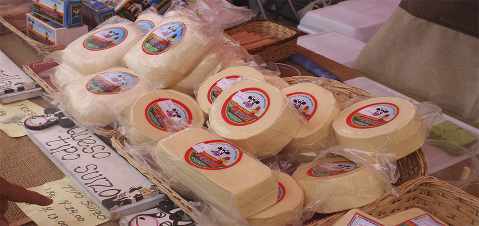
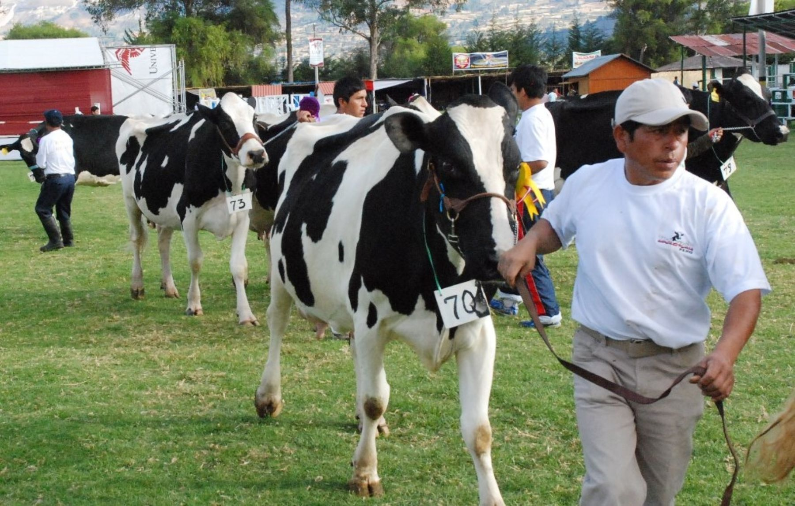
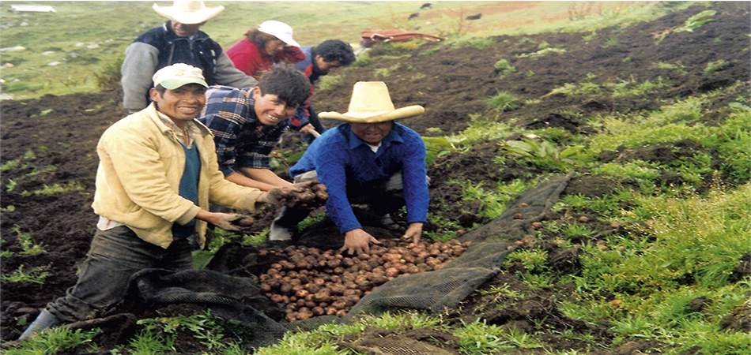

Cajamarca, fundada como «San Antonio de Cajamarca», es la ciudad más importante de la sierra norte del Perú, capital de la provincia y del departamento de Cajamarca. Está situada a 2750 msnm en la margen este de la cadena oriental de la Cordillera de los Andes, en el valle interandino que forman los ríos Mashcon y Chonta. Es una ciudad en constante crecimiento poblacional, con la posibilidad de crear en el futuro un área metropolitana conformada por las ciudades de Cajamarca y Baños del Inca y la anexión de algunos pueblos y villas próximas al casco urbano.
En Cajamarca se destaca la producción de 3 tipos de quesos: El andino tipo suizo (o Cajamarquino) producido en Hualgayoc, Chota, Cajamarca, San Miguel y Celendín. El mantecoso, elaborado en Hualgayoc, Cajamarca, Chota, Celendín y San Miguel. El fresco, cuya producción está localizada principalmente en Hualgayoc.
Cajamarca, departamento de la Sierra Norte del País, cuenta con una diversidad ecológica que ha permitido que en toda su extensión se instalen centros de cría de ganado lechero de razas Holstein y Brown Swiss en los valles, y cruces de éstas en las zonas más altas.
Cajamarca, departamento de la Sierra Norte del País, cuenta con una diversidad ecológica que ha permitido que en toda su extensión se instalen centros de cría de ganado lechero de razas Holstein y Brown Swiss en los valles, y cruces de éstas en las zonas más altas.
